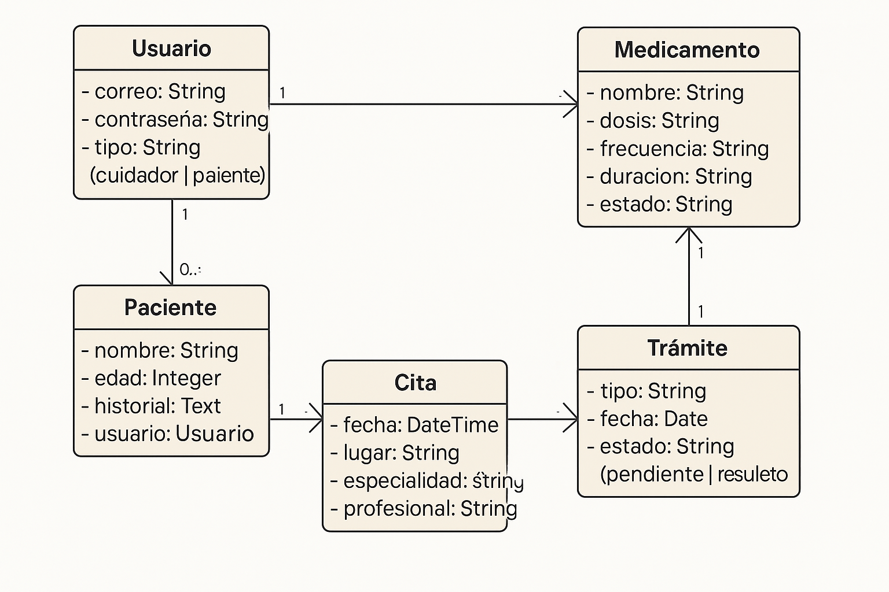
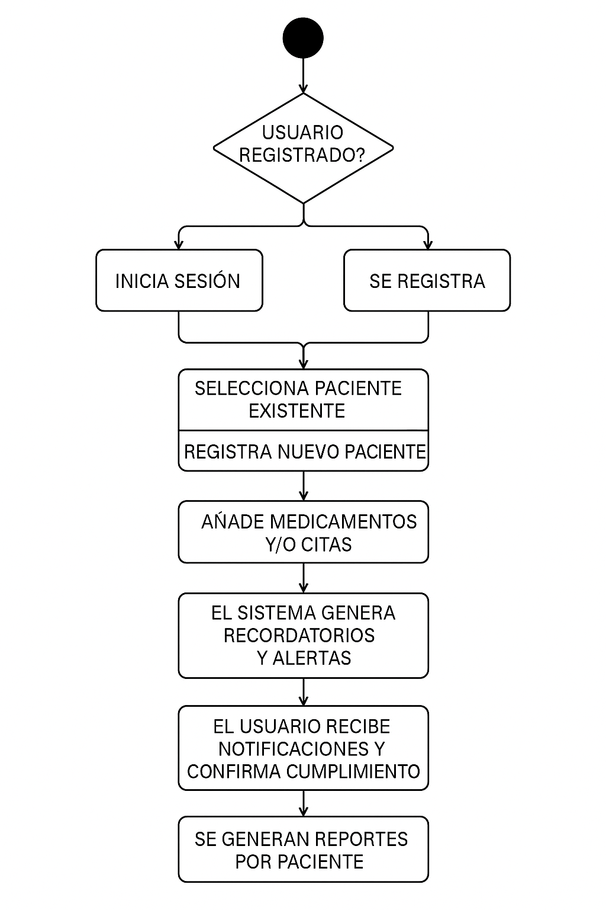

MedAlerta: Tu asistente de salud personalizado
Presentado por: Carlos José Castro Lopez
Instructor: Mauricio Fernandez
Análisis y Desarrollo de Software (3070473)
Modelos
Modelo Conceptual (Diagrama de Clases UML)
- Usuario: Tiene correo, contraseña, tipo (cuidador/paciente)
- Paciente: Tiene nombre, edad, historial, pertenece a un usuario
- Medicamento: Incluye nombre, dosis, frecuencia, duración, estado
- Cita: Contiene fecha, lugar, especialidad, profesional
- Trámite: Tiene tipo, fecha, estado (pendiente, resuelto)

Glosario Técnico
- Token: Elemento de autenticación JWT
- CRUD: Create, Read, Update, Delete
- API REST: Interfaz de comunicación entre frontend y backend
- ORM: Mecanismo de mapeo entre objetos y base de datos
Diagrama de Actividades (flujo lógico)
- Usuario se registra o inicia sesión
- Registra pacientes o selecciona uno existente
- Añade medicamentos y/o citas
- El sistema genera recordatorios y alertas
- El usuario recibe notificaciones y confirma cumplimiento
- Se generan reportes por paciente
